Hands-on Ex 1
Take-Home Ex 01
Creating data visualisation beyond default
Tableau Submission
Step-by-step Preparation
| No. | Step | Action |
|---|---|---|
| 1 | Load excel file Click to a file > choose excel file > Open. |
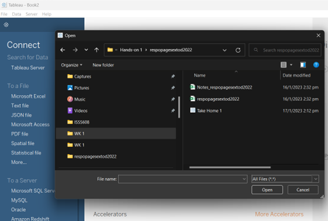 |
| 2 | Bin age group in 10s. Select down arrow > Create Group | 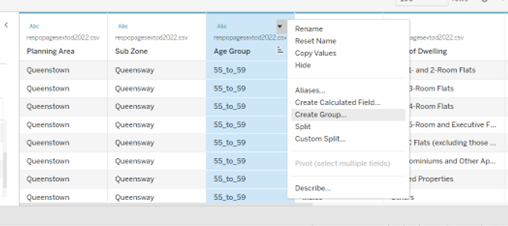 |
| 3 | Label bins and add selection to group | 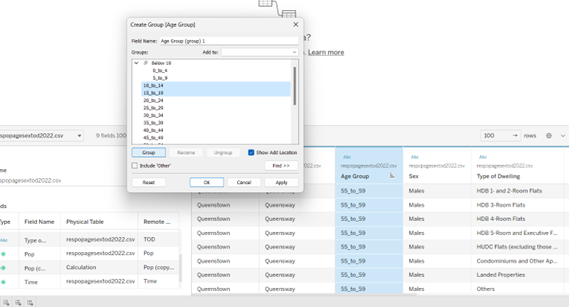 |
| 4 | Separate the male and female population. Right click “Population” > Create > Calculated Field | 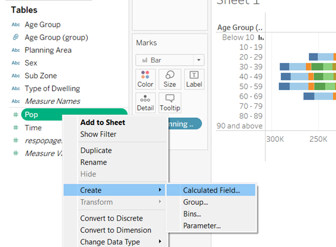 |
| 5 | Create a field “Male”. Count the Males in the Population |
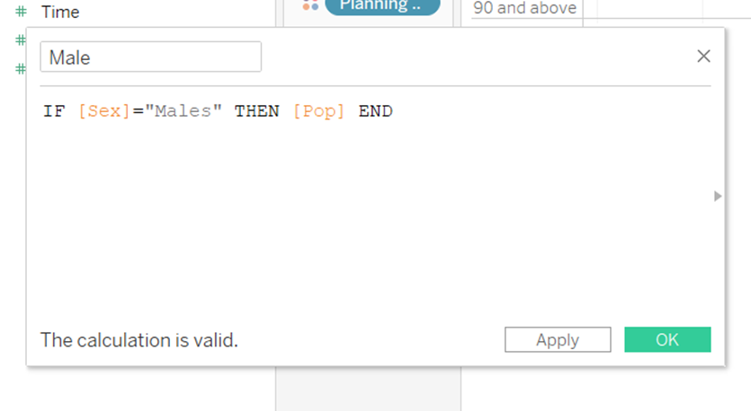 |
| 6 | Create a field “Females”. Count the Females in the Population |
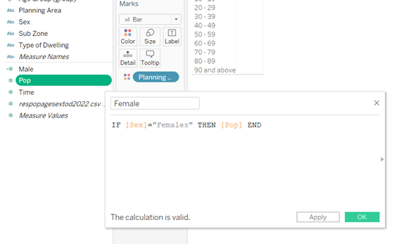 |
| 7 | Populate the Male and Female population in Columns by Age Group. To create a pyramid, right click on Male>Edit Axis |
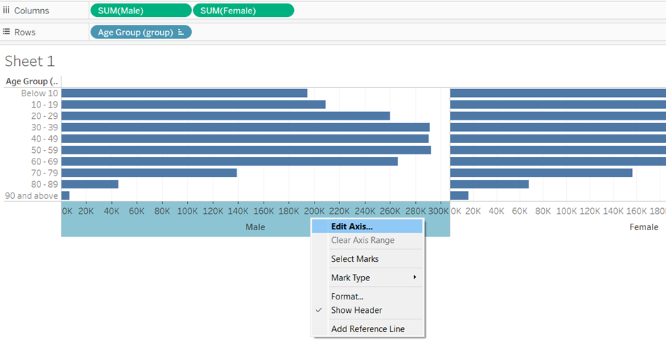 |
| 8 | a. Range > Fixed > End 24,000 b. Scale > Select Reversed |
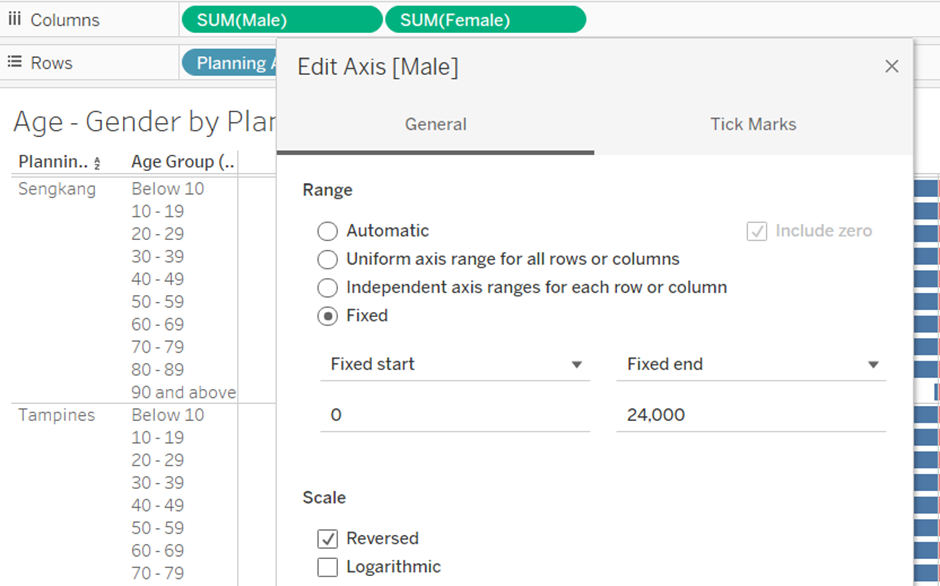 |
| 9 | Show Top 9 Planning area. Select down arrow key > Filter > Top > Top 9 > Pop Sum |
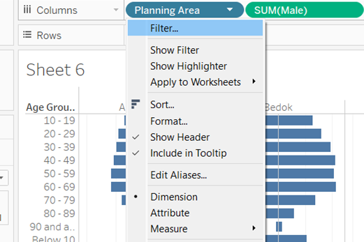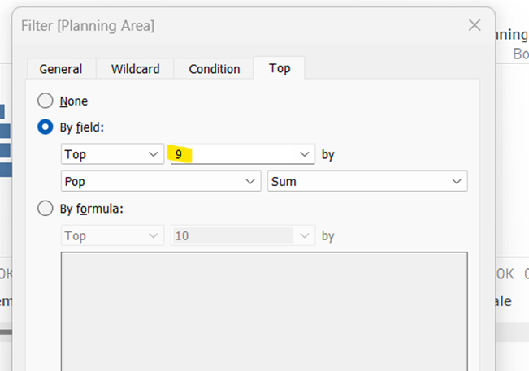 |
| 10 | Change colour of Female population. Under SUM(Female) > Colour > Select Colour |
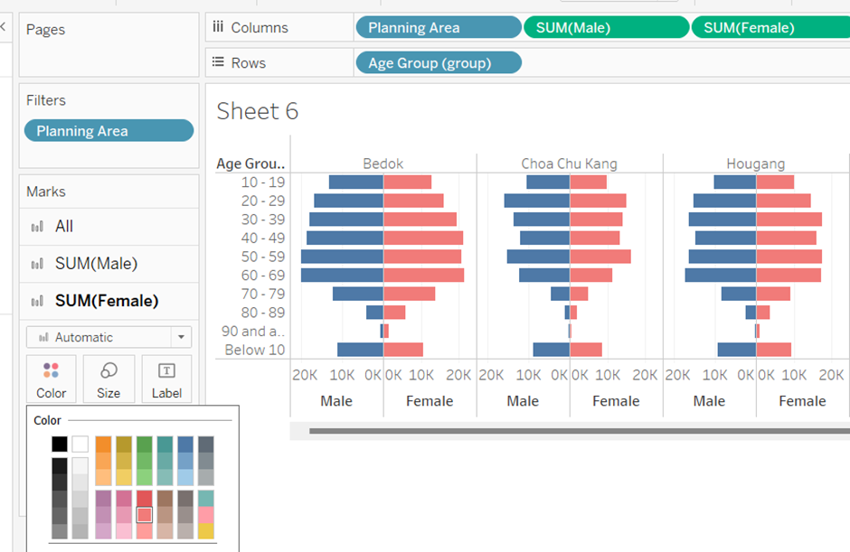 |
| 11 | Insert Avg Line per Planning Area | 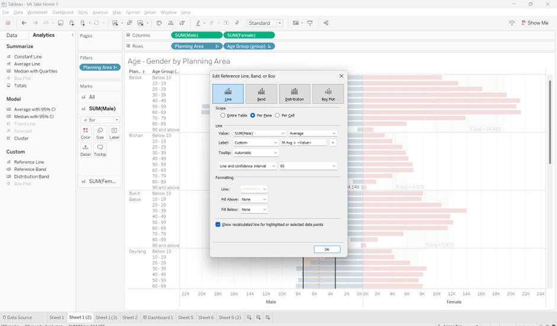 |
| 12 | Publish on Tableau Public. Sever > Tableau Public > Save to Tableau Public |
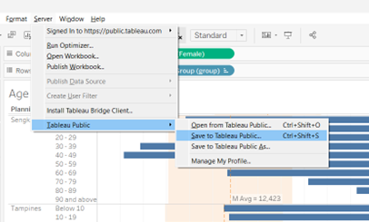 |
Takeaways
Table Visualisation
This table allows for the user to easily compare each panel against the total average line (grey line). User can see clearly which areas are above average and below average.
Observations
a. Overall Population
It can be observed that even though the population chosen are the biggest 9 areas, the 9 areas are split into 4 above average, 2 on the line and 3 below average. There is a hug difference between the top and bottom of more than 5,000.
b. Female vs Male
We observed that for the overall average, there are more females than males. This is also persistent in most planning areas with the exception of Jurong West and Woodlands. This can also be observed where in Sengkang and Jurong West, the female average is almost identical, JW had a larger male average, with a higher population for males aged 20-29.
This maybe because of the labour intensive job opportunities in that area which causes an increased demand for young males to move to that area.
c. 40 - 49
We observed that in the following planning areas, there is a sharp dip in the population aged 40 - 49. The population for 50 then increases before it dips down again at 60.
- Bukit Batok
- Chua Chu Kang
- Hougang
- Tampines
- Yishun
- Woodlands (Males only)
d. >89
For all top 9 planning areas, there are more females than males aged 89 and above. This is inline with research (https://www.prb.org/resources/around-the-globe-women-outlive-men/) that women have a longer life expectancy than men.
e. Hougang and Yishun
The planning areas Hougang and Yishun has the average population closest to the average line and thus would be an optimal area to do a population survey using these areas as statistical representation.
f. Punggol
Interestingly, even though Punggol has the 2nd population, there is a large population of females 30 - 39 in that area. This is also interesting to note that for this particular area, the shape of the pyramid is asymmetrical. More research needs to be done to understand the reason.
g. Pyramid shape
With the exception of SengKang and Punggol, all other areas have a smaller base, indicating an aging population. This is consistent with Singapore projection. As SengKang and Punggol is a relatively new area, for BTOs of new couples, there are more babies born there.